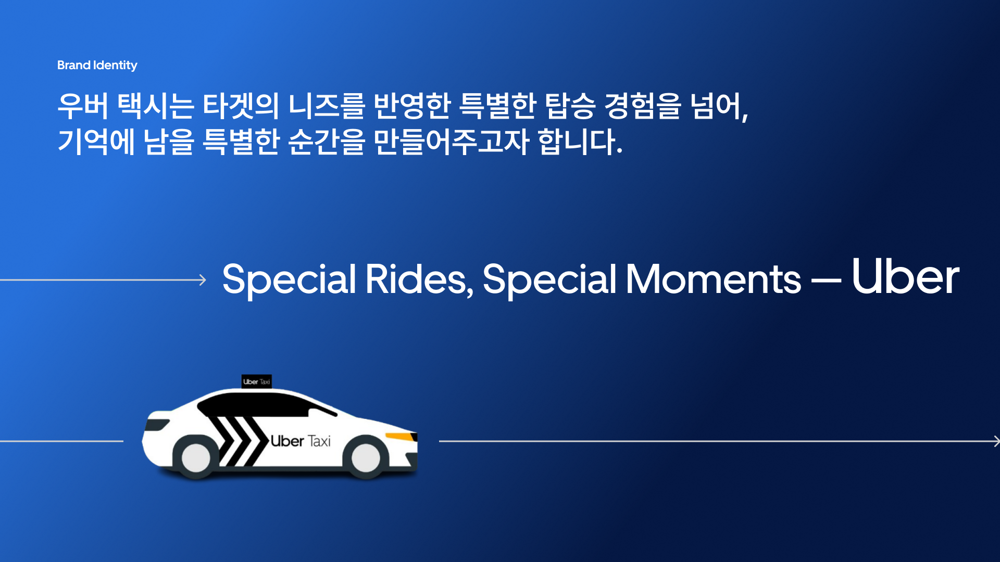

YouTube Ads & Viral Content · 2024
As part of a university-industry collaboration project, I led a campaign strategy for Uber Korea aimed at enhancing brand awareness and engagement among 20–30s users. The campaign focused on local collaboration ideas and improving brand perception among both users and taxi drivers.
The proposal was recognized for presenting a fresh and realistic solution to Uber’s brand challenges. It was positively evaluated for its creative collaboration ideas and its potential to strengthen brand relevance among both young users and service partners.